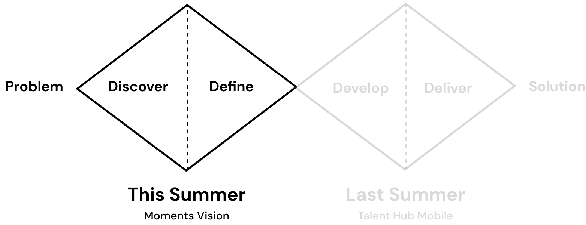
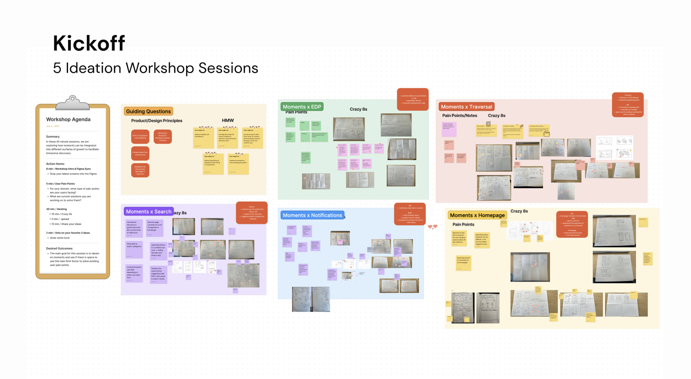
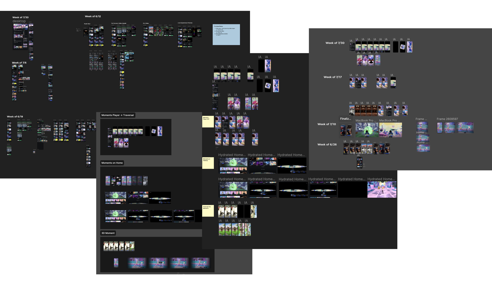
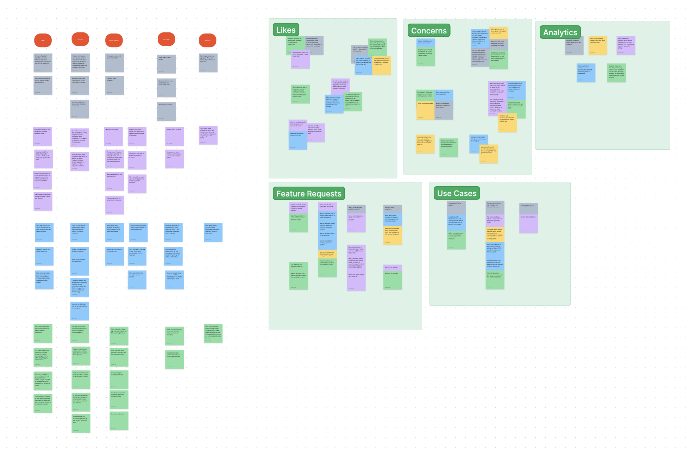

Reimagining discovery on Roblox
Reimagining discovery features in the metaverse for over 200 million users.
ROLE
Product Design Intern
DURATION
Summer 2023
3 months
3 months
TEAM
Design Director - Tim Wong
Manager - Marcus Cai
Mentor - Tan Ma
PM - Chris Aston Chen
Engineer - Swapnil Ralhan
Manager - Marcus Cai
Mentor - Tan Ma
PM - Chris Aston Chen
Engineer - Swapnil Ralhan
SKILLS
Product Strategy
Visual Design
Interaction Design
Visual Design
Interaction Design
TOOLS
Figma
Figjam
Figjam
01 OVERVIEW
Shaping the Metaverse for Millions
I was one of two product design interns on the Growth team at Roblox and I led the design and product strategy of bringing immersive discovery of games to the metaverse. As the first milestone to this long-term vision, I designed and tested end-to-end experiences that allowed users to discover content immersively and co-experience with others meaningfully.
🔒 My designs are still under NDA but I can share high-level information on my process!
🔒 My designs are still under NDA but I can share high-level information on my process!
🔎 If you have a password, view more of my process here.
During my internship I worked on two projects:
Immersive Discovery
- Owned long-term vision for features with that crossed multiple horizontal work streams: Home, Search, Social, Trust & Safety, and Notifications. These designs were presented to key stakeholders including VPs, Directors, PMs, and Engineers.
- Led design multiple design sprints to ideate with designers and stakeholders.
- Conducted user testing interviews to gain insight into community feedback.
Internal Experimentation Platform
- Worked with engineering and product management to design and launch features for an internal experimentation platform used by 2000+ employees.
⚠️ 02 THE PROBLEM
Discovery of Games was Rudimentary
Roblox currently has over 200 million monthly active users and over 60 million daily active users alone. Despite the large user base, finding new games to play was tedious and static. The previews of the games are not very representative, and the recommendations were more focused on general ranking rather than personalized content–users had to rely on trial and error or word of mouth. Similarly, game developers have very little control and insight into how they can get their games discovered.
User Groups
✅ THE SOLUTION
Immersive Discovery through User Generated Content
Roblox players spend over 150 million hours daily on the platform, generating numerous stories and memorable moments. If we enable users to automatically capture and share these moments within the platform, we can reimagine how discovery happens on Roblox.
🏆 BUSINESS GOALS
Why does Roblox Care?
Currently users are turning towards external platforms like YouTube to view moments that are captured and shared in-game. Keeping the social media flywheel within the platform increases user engagement and playtime.
03 DESIGN PROCESS
How did I get to the solution?
Since I was developing the foundation for a long-term vision, my project was focused the first half of the double diamond. I worked by generating a wide-breadth of ideas first before narrowing in on a couple features that would make the most impact.

WORKSHOPS
Kicking Off
My project had the potential to intersect with multiple horizontal workstreams, so I decided to kick off the sprint with a series of workshops with designers and stakeholders across six different projects. We jammed on guiding principles and ran Crazy 8s sessions.

ITERATE ITERATE ITERATE...
Figuring out scope and priorities
The workshop generated dozens of great ideas and from there I used an impact/feasibility matrix to determine which ideas to pursue further. I iterated on a handful of designs from low-fi sketches to high-fi prototypes with feedback from my PM, engineering partner, and design director.

USER TESTING
Putting the designs in front of real users
In the last two weeks of my internship, I worked with our UX researcher to conduct 6 user testing sessions with game developers to present the features I had been designing. The interviews validated many design decisions and also provided invaluable feedback for me to incorporate. Here is a quote that made all the hard work worth it:
"This is the most excited I've been for a Roblox feature in over a year, since they released motion-capture capabilities."
–Top Roblox Game Developer
–Top Roblox Game Developer

04 IMPACT AND LEARNINGS
How to tackle an ambiguous problem space
In the end, features that I pitched and prototyped were presented to the VPs and directors of the company and helped inform discussions across multiple teams. I was really excited to be able to drive such a high-visibility project as an intern and am grateful for everyone on my team for helping me along the way!
Through this project I gained a couple valuable insights on how to approach an ambiguous problem space:
Through this project I gained a couple valuable insights on how to approach an ambiguous problem space:
- Leverage your design partners! Users don’t benefit from designers working in silos and aligning with designers across teams allowed me to see the bigger picture.
- Develop a strong point of view. Having a strong perspective (informed by user research, competitor analysis, and a sprinkle of intuition) can be extremely important in the success of executing a design.
- Narrow the scope. It's impossible for one solution to solve all your problems. Properly defining the use case and context sets up the foundation for a strong solution.
Thanks for browsing my portfolio ദ്ദി ˉ͈̀꒳ˉ͈́ )✧
If you would like to work together, please reach out.
I'm always open to opportunities to collaborate.
Cheers!
If you would like to work together, please reach out.
I'm always open to opportunities to collaborate.
Cheers!